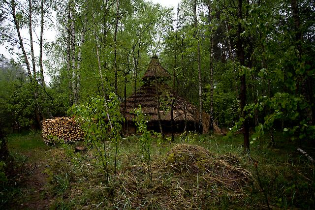

Ecovillage
Imagine living on the top of a hill in a garden full of food, herbs and other useful and beautiful species situated in a forest (and you are allowed to sleep there). Welcome to Eco-village life.

Project Details / Background
Eco-Village Life
It was an immersive, deep dive, into eco-village life, learning by doing and collaborating with others also on their journey to becoming practical in everyday life in a forest. I learned about minimum interference management and other regenerative practices, autonomous DIY systems for heating homes and larger communal spaces, hot water, drinking water, energy generation and storage, thermal mass, upcycling / adaptation of resources from the city. We recycled absolutely everything. For example we have our own natural water recycling system, a wood and clay sauna, a clay pizza oven, clay rocket stoves, we harvest our own wood from our own managed forests for fuel and for building materials for our projects and our homes- many of which where built from recycled materials combined with natural, local, materials namely wood and clay. Permaculture was the norm and there was a lot of knowledge about the medicinal properties of plants, we even had our own communal apothecary. Very magical. 
Having lived in a city for most of my early life I was, at that time, overweight, suffered from allergies and had asthma and constantly over-stimulated but somehow under-nourished, there was something missing. 30 years later, after having recently left the eco village I no longer have any of those imbalances, my biomes had finally healed. My simple advice therefore would be to take time in your life to destimulate and for forest bathing and going slowly and connecting with nature. Also I would highly encourage anyone to learn how to safely forage and to grow their own food. As I slowly realised, over the course of my life, that nature was a bigger computer with its own 'internet of mycelium' interfacing with the roots of the plants, I had a new complex system to learn. Plants are, in fact, the self-replicators that Von Neumann had always dreamed of. The magic of trees and also of smaller plants: absorbing the ions they need from the soil and fixing carbon from the air and synergistically sharing excess carbon through their roots and the mycelial network... *and* you can even eat some of them *and* they have different nutritional profiles and some even have healing properties! Let thy food by thy medicine and thy medicine by thy food, there was no going back, I fell in love and became totally fascinated.
Having lived in a city for most of my early life I was, at that time, overweight, suffered from allergies and had asthma and constantly over-stimulated but somehow under-nourished, there was something missing. 30 years later, after having recently left the eco village I no longer have any of those imbalances, my biomes had finally healed. My simple advice therefore would be to take time in your life to destimulate and for forest bathing and going slowly and connecting with nature. Also I would highly encourage anyone to learn how to safely forage and to grow their own food. As I slowly realised, over the course of my life, that nature was a bigger computer with its own 'internet of mycelium' interfacing with the roots of the plants, I had a new complex system to learn. Plants are, in fact, the self-replicators that Von Neumann had always dreamed of. The magic of trees and also of smaller plants: absorbing the ions they need from the soil and fixing carbon from the air and synergistically sharing excess carbon through their roots and the mycelial network... *and* you can even eat some of them *and* they have different nutritional profiles and some even have healing properties! Let thy food by thy medicine and thy medicine by thy food, there was no going back, I fell in love and became totally fascinated.
Dreaming: in winter I love the peace and stillness of the forest and being cosy at home with the wood stove burning, some nettle tea and plenty to read and lots of time to go slowly, regenerate and sleep. Planning: in spring I love to be active in the garden getting everthing ready for the warmer weather and main growing season.
Doing: in summer I love hosting guests in my garden for tea, music and discussion. In quieter moments or for a nice siesta I enjoy lying in my DIY hammock (away from the laptop). (confession: sometimes with the laptop, but I gradually weened myself off down to about 2 hours per week of screen time!) and when it is just too hot: finding a few friends, jumping on the bicycle and going for a refreshing swim in one of the many nearby (beautiful) natural lakes.
Celebrating: In autumn comes the main harvest and with a bit of rain and bit of luck, I love getting lost in the woods on long afternoons hunting for mushrooms.
There is nothing quite like sitting with good friends in a beautiful wild garden sipping locally-grown/foraged herbal tea. I love foraging to make wild salads and growing my own herbs and vegetables. I have even had the pleasure and the privelege to looking after chickens, horses and a donkey. In a few words: Radical Self-Sustainability and Biophilia.
Surrounded by a community which fostered camaraderie while celebrating individuality and diversity everyone was encouraged to try out their ideas for alternative living ranging from unique gardens to solar kitchens and from tipis to iron-age roundhouses and even a few small geodesic domes and cob houses. There were also seasonal social occasions such as communal harvesting of apples and potatoes and also regular full moon pizza parties. As well as being practical, many of the people living there were musically talented and there was a large hall for music and cultural events.
I also learned about traditional wood working techniques and also so many improvised and appropriate solutions for everday practical problems. Of course we also used and maintained modern engineering solutions (wireless, networking, power distribution, a large solar installtion, various hot and cold water systems). The people living in the community had varying levels of experience and there was a good culture of sharing knowledge, tools and helping your neighbours (barn raising).
Within the community there was a diverse range of perspectives and skills and we maintained our own infrastucture and learnt how to thrive in a natural setting, adapting to life in a forest. On a personal and a community level the key questions are: How can we live together- transcending the socialisation in institutions / wider society? How can we organise ourselves to lower our individual and collective impact on other people and on the planet? Which skills do we need to learn in order to sustainably meet our needs and to adapt to the challenges we face in the modern world?
These idyllic rural retreats have taught self-sufficiency without relying on state-run infrastructure through activities such as cutting wood for warmth or carrying water for daily needs—a unique perspective merging urban intellectual pursuits with serene natural environments.
Image Gallery
 Give your image a caption. People love context.
Give your image a caption. People love context.
 Give your image a caption. People love context.
Give your image a caption. People love context.
 Give your image a caption. People love context.
Give your image a caption. People love context.